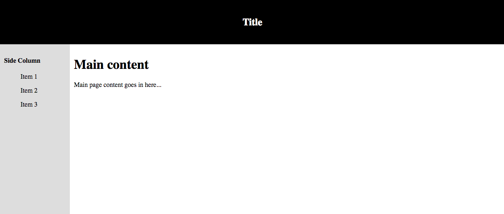

Structural grouping involves the use of <div> tags to divide different sections of your web page. If you go the the home page you might notice the different colours of the top and bottom half of the page. The about section is a seperate part of the page to the top section. This is achieved using <div> tags.
<div> tags are especially useful for grouping block elements and styling them with CSS.
Most browsers defualt styling for divs look like this: div { display: block; }.
Below is an example of how powerful divs can be when coupled with the styling off CSS.
Which will produce something like this...
As you can see, this is built purely with <div> tags and little CSS. Spend some time looking at the HTML and relating it to the result to get a brief idea of how to segment a web page. The next section is on CSS where you can learn how the styling applies to HTML tags.